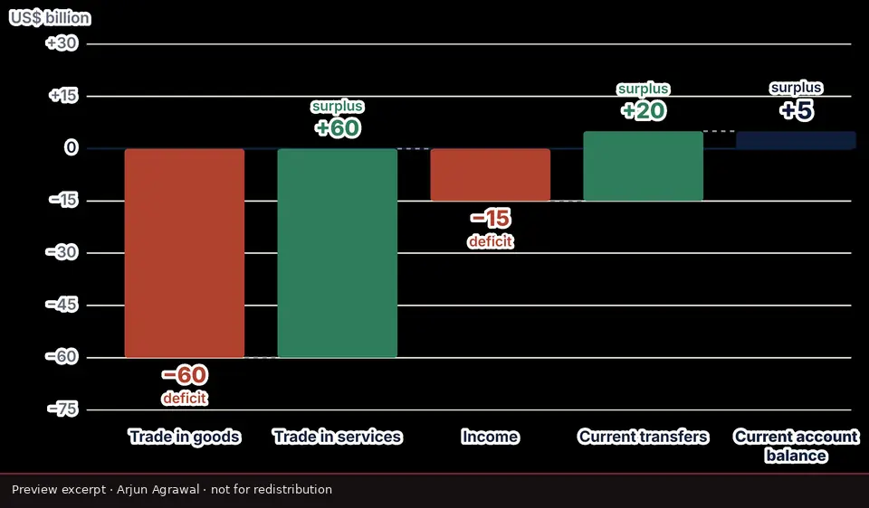
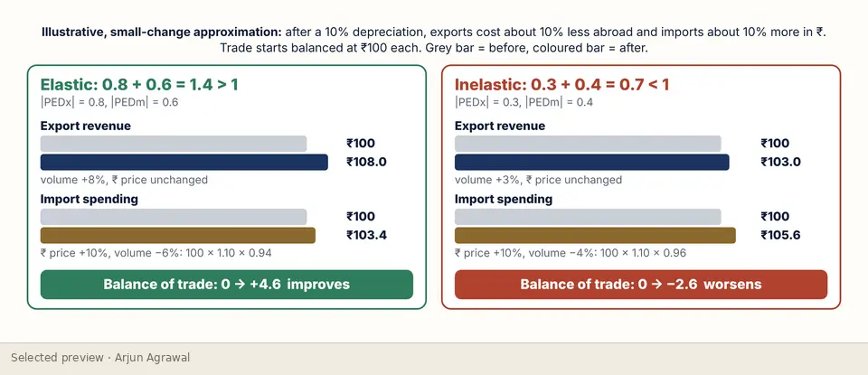
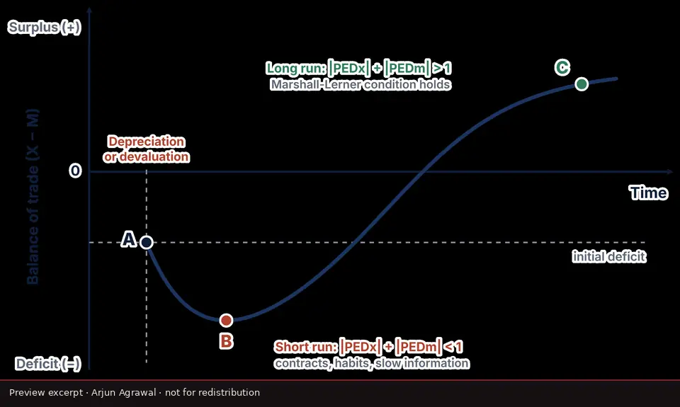
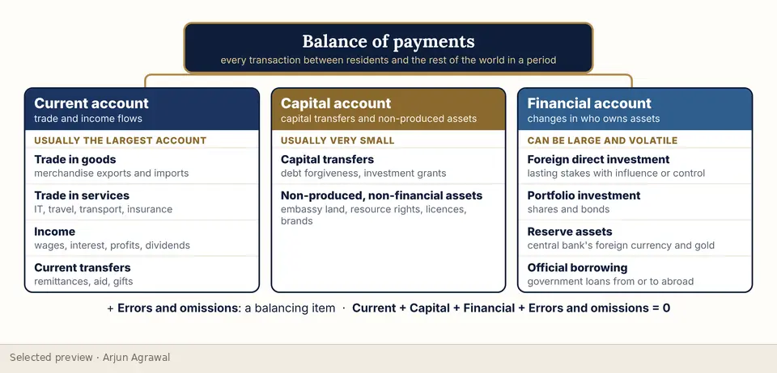
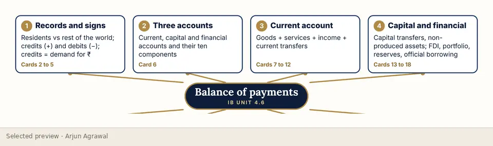

Home / Learning Studio / Balance of payments
Visual explainer · Unit 4.6, with HL extension
Balance of payments
The balance of payments as a set of accounts a student can actually fill in: what is recorded where, why the accounts must sum to zero, and what a persistent current-account deficit does and does not tell you.
- Type
- Visual explainers
- Format
- Slide sequence: 15 diagrams and infographics
- Level
- SL and HL (HL slides labelled)
- For
- Students, Teachers
- Topics
- Global economy, Balance of payments, Current account, Marshall-Lerner
- Checked
- 15 October 2026. All 15 slides read. The current-account sum, the identity and the Marshall-Lerner arithmetic recomputed.





What it helps learners do
- Classify a transaction into the current, capital or financial account, as a credit or a debit
- Build a current-account balance from its four components
- Explain why the accounts sum to zero, and why that identity says nothing about cause
- Link current-account imbalances to exchange-rate pressure
- HL: apply the Marshall-Lerner condition and explain the J-curve
The thinking behind it
Accounts before arguments: the student first records real transactions and builds the balance, so the identity is something they have seen hold. The HL material is taught through numbers that can be checked, with the elastic and inelastic cases side by side.
What the complete resource contains
- Transactions between residents and the rest of the world, as credits and debits
- A classification tree and the architecture of the three accounts
- A current-account waterfall built from goods, services, income and transfers
- The identity, and how the accounts depend on one another
- Deficits, surpluses and exchange-rate pressure
- When a persistent deficit matters, and the policy choices
- HL: the Marshall-Lerner condition and the J-curve
- A one-page revision map
Interested in exploring more?
This page shows a small selection of excerpts. The complete resource is not published online. If you are a teacher, a student or a school interested in it, please get in touch, and I will reply personally.
Ask about this resourceOpen it in the StudioOn the platform
Independent resources by Arjun Agrawal. They are not produced or endorsed by the International Baccalaureate Organization, and none of the questions shown is an IB examination question.